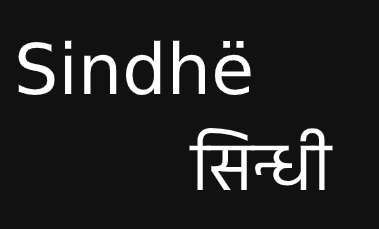

These images are for promotion of the Latin script of Sindhi language. You can use these images wherever you want without giving any credit.
Word "Sindhi" written in different scripts of Sindhi language



Sindhi Language Alphabet Chart (Latin/Roman Script)


")

Latin/Roman Script to Other Scripts Conversion
Sindhi Language (Latin/Roman Script) Sample Text

Sindhi Language (Latin/Roman Script) Poetry